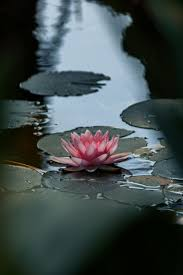
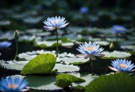

Mongolia
National Flower — Lotus
The lotus flower is one of the most powerful symbols in the world. Rising from muddy, murky water to bloom in perfect beauty above the surface, it represents purity, resilience, and spiritual awakening. In Mongolia, where Buddhism has shaped culture and daily life for centuries, the lotus holds a place of deep reverence.


The Lotus and Buddhism in Mongolia
Buddhism arrived in Mongolia in the 16th century and quickly became the heart of Mongolian spiritual life. The lotus is a sacred symbol in Buddhism — it represents the purity of body, mind, and spirit. The pink lotus is specifically associated with Buddha himself, and images of the Buddha are traditionally depicted sitting upon a lotus throne. The Lotus Sutra, one of Buddhism's most important teachings, carries the message that all beings have the potential to reach enlightenment — just as the lotus always finds its way to bloom above dark waters.
Why the Lotus is Mongolia's National Flower
The lotus was chosen as Mongolia's national flower because of its deep spiritual meaning in Buddhist culture. Its journey — rooted in mud, growing through murky water, and blooming into something pure and beautiful — mirrors the Buddhist path of overcoming suffering and achieving enlightenment. For Mongolians, the lotus is not just a flower; it is a daily reminder of strength, hope, and the possibility of transformation.
Quick Facts
| Feature | Details |
|---|---|
| Scientific Name | Nelumbo nucifera |
| Common Colors | Pink, white, red, blue |
| Blooming Season | Summer (June – September) |
| Symbol of | Purity, resilience, enlightenment |
| Sacred in | Buddhism, Hinduism |
How to Care for a Lotus
- Plant in a container filled with heavy clay soil, then submerge in a pond or large water basin
- Place in full sunlight — lotus flowers need at least 6 hours of direct sun per day
- Keep water temperature warm, ideally above 70°F (21°C)
- Fertilize lightly once the plant has established its first few leaves
- Remove dead leaves and flowers regularly to keep the water clean
- In cold climates, move the container indoors before the first frost
Watch the Lotus Bloom
There is something truly meditative about watching a lotus open. This beautiful time-lapse captures the full blooming process:
▶ Watch: Serenity of a Lotus — Lotus Flowers Blooming Time Lapse